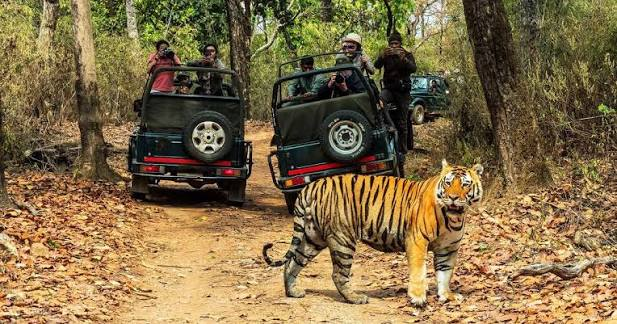
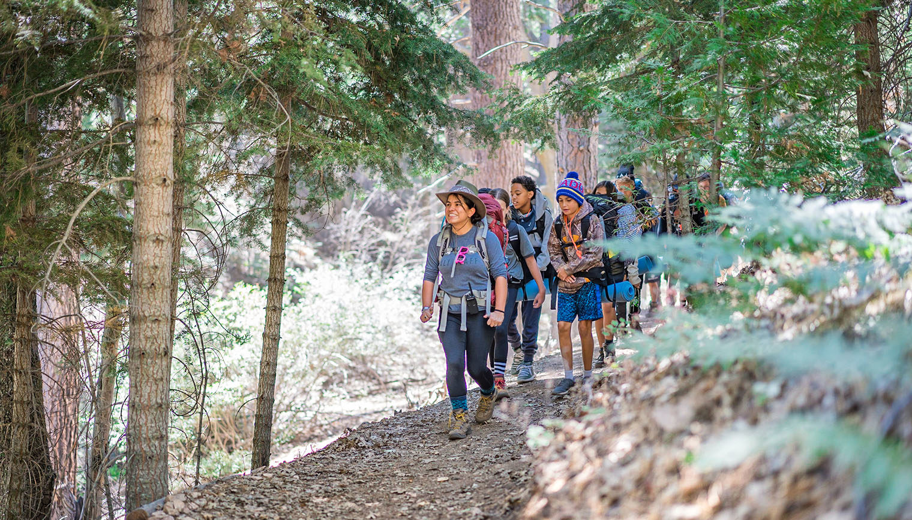

Tour Features:

Jeep Safari
Jeep Safari

Bird Watching

Guided Walk
Guided Walk
Shuklaphanta National Park is a protected area in the extreme southwest of Nepal, in the Kanchanpur District of Sudurpashchim (Far-West) Province. It covers about 305 square kilometers of core area, with an additional buffer zone of roughly 243.5 square kilometers.
The park lies in the Terai lowlands and stretches from around 175 m to 1,300 m above sea level, featuring a mix of grasslands, sal forests, riverine and wetland habitats. One of its signature landscapes is the large, open grassland called Shuklaphanta, which is among the largest intact grasslands in Nepal.
Historically, the area was once a royal hunting ground. It became a wildlife reserve in 1976 and was officially declared a National Park in 2017.
Ecologically, it is very important: it supports many species including the swamp deer (barasingha) — Shuklaphanta is famous for having one of the world’s largest herds. There are also tigers, elephants, leopards, and more than 450 species of birds.
Shuklaphanta National Park has one of the largest herds of swamp deer.